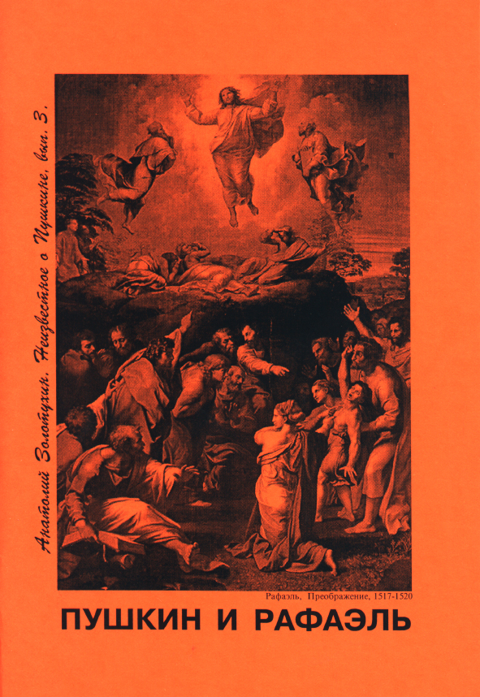

25 мая во Дворце культуры строителей Народный театр Заслуженного артиста Грузии Н. А. Троянова показал николаевцам премьеру пьесы “Рафаэль”, написанную и поставленную Н. А. Трояновым, как драматургом и режиссером. Премьера пьесы была посвящена 200-летию со дня рождения А. С. Пушкина не случайно. Это часть культурологической программы, которую наметил и последовательно осуществляет Н. А. Троянов к юбилею поэта. В рамках этой программы в начале этого года театр показал Пушкинскому клубу бессмертную трагедию А. С. Пушкина “Моцарт и Сальери”, кроме того, в своей редакции Н. А. Троянов готовит постановку пушкинской повести “Барышня крестьянка”. Несомненно создание и постановка пьесы “Рафаэль” является вершиной драматургического и режиссерского таланта Н. А. Троянова, не говоря уже о недюжинных организаторских способностях, без которых в наше нелегкое время вряд ли возможно воплотить творческие планы. Уверен, что на этот духовный подвиг Николая Алексеевича вдохновлял и Пушкин. Любовь к поэту у Троянова не случайна и проходит через всю жизнь. Приведу один только пример. Николай Алексеевич родился в1931 г. в Эстонской мызе (дача, хутор, заимка – по В. И. Далю) Новгородской области по соседству с потомственным имением декабристов Муравьевых-Апостолов, в100 км. от Петербурга. В1939 г. закончил там же среднюю школу. Уже в школе, в1937 г. , когда вся Россия отмечала 100-летие со дня гибели А. С. Пушкина, он один в течении полутора часов читал наизусть поэму “Медный всадник” и повесть “Станционный смотритель”. Потом была война и там он воевал вместе с Пушкиным, пройдя всю войну, вначале начальником штаба партизанского отряда, затем командиром стрелковой роты. А уж как вышел на театральную тропу, то всякий раз в своей жизни возвращался к Пушкину, как к чистейшему источнику мировой культуры и Ипокрены.
{kind=link}
{kind=link}
Посвящается Н.А. Троянову
Из всех гениев мировой культуры, несмотря на разные виды искусства, Рафаэля, Моцарта и Пушкина объединяет какое-то солнечное родство. И оно проявилось не только в том, что каждый из них прожил сравнительно короткую жизнь, около 37 лет (Моцарт – 35), но выразилось, прежде всего, в исключительной продуктивности творчества, которое и по сей день оценивается многими как некая видимая легкость, простота и вместе с тем непостижимое и непревзойденное совершенство, для описания которого никогда мы не сможем подобрать нужных слов и всегда лучшим ответом будет божественное молчание. Впрочем, Пушкин, исследуя природу гениальности, в своей непревзойденной трагедии “Моцарт и Сальери”(здесь не случайно он упоминает и Рафаэля) дал весьма точное определение гениальности в строках: “Нас мало избранных счастливцев праздных, Пренебрегающих презренной пользой, Единого прекрасного жрецов.” Действительно, все трое были признаны сразу и безоговорочно еще при жизни гениями, для всех троих творчество было как бы игрой или забавой, отсюда избранность, счастье и видимая праздность, сочетавшаяся с невероятной трудоспособностью. Все они были Пророками, восходившими на глазах у всех, шаг за шагом, на Эверест Духовности Человечества. Предчувствуя близкую кончину, не случайно каждый из них поставил в качестве заключительного аккорда: Рафаэль картину “Преображение”, Моцарт – “Реквием”, Пушкин – стихотворение “Я памятник себе воздвиг нерукотворный…”. Как известно, современниками Рафаэля были не менее гениальные Леонардо да Винчи и Микельанджело Буанаротти, линию которых в тех же видах искусства, нужно думать, продолжили И. С. Бах и Л. Н. Толстой. В известной степени их можно считать антиподом вышеперечисленной троицы во всех отношениях, кроме пренебрежения презренной пользой и конечного результата – гениальности. И все они вместе, несмотря на разные судьбы, являются воистину Жрецами Единого Прекрасного, заложившими основу будущей светской религии – Великого Искусства!
Напомню, что Рафаэль (полное имя Рафаэлло Санти, 1483-1520) был итальянским живописцем и архитектором из Урбино, наиболее ярким представителем эпохи Высокого Возрождения. Как архитектор, проектировал собор Святого Петра, строил капеллу Киджи церкви Санта-Мария дель Пополо (1512-1520) в Риме. Как художник, расписывал комнаты Ватикана (1509-1517), виллу Фарнезина (1514-1518) и совместно с учениками – лоджии Ватикана (1519). Создавая тип идеального человека эпохи Возрождения, например, портрет “Б. Кастильоне, 1515″, Рафаэль классически ясно, возвышенно и точно дал гармоничные, жизнеутверждающие идеалы своей эпохи. Наибольшей силы его гений достиг в изображении женских образов – мадонн. Начиная с мягкого, лиричного изображения “Мадонны Конестабиле”, в ранний период его творчества (1500-1502) и заканчивая общепризнанной вершиной изображения Богоматери “Сикстинской мадонны”(1515-1519). Впрочем, этот страшно неполный перечень произведений Рафаэля меркнет перед его любым отдельно взятым творением, от которого просто невозможно отвести взор…
Вопрос исследования отношения Пушкина к Рафаэлю остается малоизученным, известны заметки А. Эфроса и несколько статей Г. М. Кока да комментарии к одной из них Е. А. Ковалевской. Между тем, в пушкинском пантеоне величайших гениев мира Рафаэль занимает одно из первых мест. Это видно из поэтического творчества Пушкина, на протяжении всей жизни возвращавшегося к имени великого творца эпохи Высокого Возрождения.
Уже в лицейские годы в поистине энциклопедическом стихотворении “Монах” в1813 г. Пушкин пишет о Рафаэле, как о символе самой великой ценности, противопоставляя ему символ бедности – стул без одной ноги:
Взошедши в дом, где мирно жил Монах Не золота увидели б вы горы, Не Мрамор там прельстил бы ваши взоры, Там не висел Рафаэль на стенах, – Увидели б вы стул о трех ногах…
Как справедливо заметил А. Эфрос: “Первенствование Рафаэля, открывающего художественный синодик “Монаха” и приравненного к величайшим материальным ценностям, было утверждено для Пушкина карамзинской категоричностью (см. “Письма русского путешественника”): “Рафаэль признан единогласно первым в своем искусстве”(примечание Карамзина к письму XXIII); место Рубенса определено формулой: “Рубенс по справедливости называется Фландрским Рафаэлем”(там же)...”.
В1819 г. поэт пишет стихотворение “Возрождение” (здесь название имеет двойной смысл), написанного под впечатлением картины Рафаэля “Мадонна с безбородым Иосифом”(“Святое семейство”), выставленной в Эрмитаже.
{kind=link}
Картина поступила в музей в1772 г. в составе знаменитой коллекции Пьера Кроза. На первых страницах каталога выставки пушкинского времени, открывавшегося репродукцией картины, сообщалось: “Господин Барруа весьма дешево купил сию картину, принадлежавшую Ангулемскому дому. Она хранилась в оном без особенного внимания. Не искусной какой-то живописец, желая поновить ее и не умея совместить работы своей, с работой творца оной, всю ее переписал снова, так что уже не видно было в ней кисти Рафаэла. Но когда господин Барруа ее купил, то Вандин, очистив ее от посторонней работы, возвратил свету подлинное ее письмо, которое вместо повреждения стало от того гораздо свежее; наложенные на нее краски не искуснаго живописца послужили ей покрышкой и сохранили ее от вредных действий воздуха”. Сегодня принято считать, что картина датируется1506 г. и ее создание связано либо с именем Таддео Таддеи, либо с именем Гвидобальдо да Монтефельтро. Именно этот факт и послужил Пушкину при написания следующего стихотворения:
ВОЗРОЖДЕНИЕ
Художник-варвар кистью сонной Картину гения чернит И свой рисунок беззаконный Над ней бессмысленно чертит. Но краски чуждые, с летами, Спадают ветхой чешуей; Созданье гения пред нами Выходит с прежней красотой. Так исчезают заблужденья С измученной души моей, И возникают в ней виденья Первоначальных, чистых дней.
В октябре1830 г. при создании трагедии “Моцарт и Сальери” эту же мысль Пушкин вкладывает в уста Сальери:
«Мне не смешно, когда маляр негодный Мне пачкает Мадонну Рафаэля, Мне не смешно, когда фигляр презренный Пародией бесчестит Алигьери. Пошел, старик».
В том же1819 г. Пушкин пишет стихотворение, посвященное последней, не законченной картине Рафаэля “Преображение”:
{kind=link}
НЕДОКОНЧЕННАЯ КАРТИНА
Чья мысль восторгом угадала,
Постигла тайну красоты?
Чья кисть, о небо, означала
Сии небесные черты?
Ты, гений!.. Но любви страданья
Его сразили. Взор немой
Вперил он на свое созданье
И гаснет пламенной душой.
Подлинная причина гибели Рафаэля остается тайной и сегодня. В биографиях, восходящих к жизнеописаниям Джорджо Вазари о последних днях говорится так: “…Рафаэль втихомолку продолжал заниматься своими любовными делами, превыше всякой меры предаваясь этим утехам. И вот однажды после времяпровождения еще более распутного, чем обычно, случилось так, что Рафаэль вернулся домой в сильнейшем жару, и врачи решили, что он простудился, а так как он в своем распутстве не признавался, ему по неосторожности отворили кровь, что его ослабило до полной потери сил… после исповеди и покаяния он завершил свой жизненный путь в день своего рождения, в страстную пятницу тридцати семи лет от роду”. В 1805 г. в русской книге “Эрмитажная галерея” сообщалось: “Рафаэль достиг бы блистательных успехов в колорите, если бы пламенное его сложение, непрестанно влекшее его к любви, не причинило ему преждевременной смерти”. Во французском “Всеобщем словаре” 1810 г. эта же версия излагалась так: “Рафаэль умер вследствие истощения от своей страсти к женщинам”. Отсюда идет и Пушкинская оценка: “Но любви страданья Его сразили.“. Во времена Пушкина даже “Сикстинская мадонна”(1515) так высоко не ценилась, как “Преображение”, которое считалась общепризнанным шедевром мировой живописи. Вверху картины изображен “преобразившийся” Христос, вознесшийся над горой Фавор, он излучает сияние, а рядом с ним пророки Илья и Моисей, спустившиеся за ним с небес. Ощущение парения трех основных фигур передано настолько сильно, что кажется невесомость возможна и вблизи поверхности земли. Внизу изображены павшие ниц апостолы, а у подножия горы евангельские персонажи. Но, присмотритесь внимательно к лицу Христа и сравните его с автопортретом художника, и вы найдете сходство, еще ранее Рафаэль изобразил себя и в самом ясновидящем из всех ветхозаветных пророков – в портрете пророка Исайи. Незаконченной картина “Преображение” стояла у гроба великого художника, Рафаэль скончался 6 апреля1520 г., в тот же день когда и родился в1483 г. Так Рафаэль подготовился к вознесению над временем и бренной суетой земного мира…
В1828 г. Пушкин пишет стихотворение “Кто знает край, где небо блещет…”, приводим отрывок его, касающийся Рафаэля:
***
Kenst du das Land… Wilh. Meist. По клюкву, по клюкву, По ягоду, по клюкву…
Кто знает край, где небо блещет
Неизъяснимой синевой,
Где море теплою волной
Вокруг развалин тихо плещет;
Где вечный лавр и кипарис
На воле гордо разрослись;
Где пел Торквато величавый;
Где и теперь во мгле ночной
Адриатической волной
Повторены его октавы;
Где Рафаэль живописал;
Где в наши дни резец Кановы
Послушный мрамор оживлял,
И Байрон, мученик суровый,
Страдал, любил и проклинал ………………………………………. Пред флорентийскою Кипридой, Их две… и мрамор перед ней Страдает, кажется обидой. Мечты возвышенной полна, В молчанье смотрит ли она На образ нежный Форнарины Или Мадоны молодой, Она задумчивой красой Очаровательней картины… Скажите мне какой певец, Горя восторгом умиленным, Чья кисть, чей пламенный резец Предаст потомкам изумленным Ее небесные черты? Где ты, ваятель безымянный Богини вечной красоты? И ты, харитою венчанный Рафаэль? Забудь еврейку молодую, Младенца – бога колыбель, Постигни прелесть неземную, Постигни радость в небесах, Пиши Марию нам другую, С другим младенцем на руках.
Как свидетельствуют современники поводом для написания стихотворения послужила поездка в Италию красавицы, графини Марии Александровны Мусиной-Пушкиной (1801-1853).
{kind=link}
Первый эпиграф взят поэтом из песенки Миньоны в романе Гете “Вильгельм Мейстер”, в переводе с немецкого означает “Ты знаешь край…”, он задал тональность стихотворению. Что касается второго эпиграфа, то современники рассказывают, что Мусина-Пушкина по возвращению из Италии капризничала и однажды запросила много клюквы. Здесь под “флорентийскою Кипридою” поэт имел ввиду античную статую Венеры Медицийской, хранящейся во Флоренции, в галереи Уфицы. Под “Ваятелем безымянным Богини вечной красоты” имеется ввиду создатель Венеры Медицийской, неизвестный скульптор III в до н. э.
{kind=link}
Во времена Пушкина ошибочно принимали портрет неизвестной женщины работы Себастиано дель Пьембо за произведение Рафаэля, как портрет его возлюбленной Фарнарины, вот почему поэт пишет здесь: “…образ нежный Фарнарины…“. Что касается стиха: “Или Мадоны молодой…“, то здесь исследователи сходятся на том, что из нескольких “Мадон” Рафаэля, которые в то время находились в галереях Флоренции, говорится, вероятно, о наиболее прославленной – “Мадонне делла Седия” в галерее Питти. В заключительных стихах “Пиши Марию нам другую, С другим младенцем на руках.” поэт имеет ввиду то, что Мусину-Пушкину звали Марией и у нее в это время был маленький сын. Пушкин, по словам П. А. Вяземского, был влюблен в Мусину-Пушкину и, конечно же, завидовал ей, видевшей бессмертные творения Рафаэля. Судя по всему и она была неравнодушной к нему. Пушкин часто бывал у них в доме и в доме ее родителей князя А. М. Урусова. Стихотворение появилось, как результат рассказов М. А. Мусиной-Пушкиной о пребывании в Италии.
Для николаевцев особый интерес представляет упоминание имени Рафаэля в стихотворении, написанном в1828 г. и посвященном Пушкиным нашей землячке А. О. Смирновой-Россет:
ЕЕ ГЛАЗА
Она мила – скажу меж нами –
Придворных витязей гроза,
И можно с южными звездами
Сравнить, особенно стихами,
Ее черкесские глаза.
Она владеет ими смело,
Они горят огня живей;
Но, сам признайся, то ли дело
Глаза Олениной моей!
Какой задумчивый в них гений,
И сколько детской простоты,
И сколько томных выражений,
И сколько неги и мечты!…
Потупит их с улыбкой Леля –
В них скромных граций торжество;
Поднимет – ангел Рафаэля
Так созерцает божество.
{kind=link}
Несколько слов об адресате стихотворения. Александра Осиповна Смирнова-Россет (6.03.1809-7.07.1882), в детские годы (1814-1818) жила в Громаклее (ныне Водяно-Лорено), в имении дяди по отцу, будущего декабриста, Н. И. Лорера, о чем она оставила “Воспоминания”, в которых писала: “В самых красивых местах за границей мне всегда мерещилась Громоклея, и казалось, что всего приятнее в этой бедной деревушке. Я уверена, что настроение души, склад ума, наклонности, еще не сложившиеся в привычки, зависят от первых детских впечатлений… Против дома была станция, т. е. белая хата, тщательно вымазанная, тоже крытая в старновку, а за этим виднелась только гладь да даль. “Тут, – говорили, – дорога в Соколы; а вот эта, что перед домом на Николаев, в Одессу”. В 1821 и 1824 гг. Пушкин четырежды проезжал почтовую станцию “Водяное”, тогда А. О. Россет училась в Петербурге в Екатерининском институте (1820-1826 гг.).
Отец ее, Осип Иванович Россет, происходил из старинного французского рода, отличился храбростью при штурме и взятии Очакова и был отмечен А.В. Суворовым, вместе со своим дальним родственником и другом герцогом Ришелье (он был крестным отцом Александры и уезжая во Францию, прощаясь с царем, предопределил принятие ее в институт и фрейлины царицы). Отец стоял у истоков рождения Одессы, там и умер от чумы в1814 г. Мать Александры, Надежда Ивановна Лорер, француженка по отцу, грузинка по матери (род князей Цициановых) обладала незаурядной красотой, если по признанию С. С. Киселевой (Потоцкой), с которой А. О. Россет встречалась в1836 г. в Мариенбаде, ее муж, П. Д. Киселев, узнав, что мать А. О. Россет овдовела, “до безумия влюбился в нее и просил ее руки, но она ему отказала”. Позднее уже, когда вышла замуж дочь А. О. Россет, Софья Трубецкая, Киселев (а он, ведь, знал общепризнанную красавицу С. К. Витт-Потоцкую!), сказал ей: “Княгиня! Вы очень красивы! Ваша мать красивей вас. Но ваша бабушка была самой красивой женщиной, какую я видел”.
За год до окончания Екатерининского института умирают мать и бабушка А. О. Россет и ее, осиротевшую, Николай Павлович с октября 1826 г. определяет в фрейлины царицы Александры Федоровны. А. О. Россет отличалась незаурядным умом и красотой, острыми суждениями (вот почему Пушкин назвал ее “Придворных витязей грозой”), но она была бедна. 11 января 1832 г. Александра выходит замуж за состоятельного чиновника Министерства иностранных дел Николая Михайловича Смирнова (1808-1870), это был явный брак по расчету. Благодаря своей образованности и обходительности она становится всеобщей любимицей. Все окружение Пушкина и он сам почитали за счастье войти с ней в знакомство: Жуковский, Вяземский, А. И. Тургенев, позднее Гоголь и Лермонтов – все они были влюблены в нее и оставили посвященные ей стихотворения и прозу. Сближение с Пушкиным было не простым. Познакомились они на балу у Е. М. Хитрово (дочь Кутузова) в 1828 г. Это стихотворение написано в первое время их знакомства и как раз отражает их непростые отношения, если ей он противопоставляет А. А. Оленину(1808-1888), которую в это время любил и даже сватался к ней, но получил отказ. Само стихотворение является ответом П. А. Вяземскому на его стихотворение “Черные очи”, воспевающее красоту А. О. Россет, впоследствии Смирновой. В нем Пушкин противопоставляет ее глаза глазам Олениной, причем, здесь в словах “Ангел Рафаэля Так созерцает божество” имеется ввиду “Сикстинская мадонна” Рафаэля.
{kind=link}
Об этой же мадонне Рафаэля поэт вспоминает в Одессе, в марте-апреле1824 г., в черновом варианте V-й строфы 3-й главы романа в стихах “Евгений Онегин”, записывая характеристику Ольги в начале в таком виде:
В чертах у Ольги жизни нет Как в Рафаэлевой Мадоне Румянец да невинный взор Мне надоели с давних пор Всяк молится своей иконе Владимир сухо отвечал И наш Онегин замолчал.
В чистовом варианте строфы читаем уже: “…В чертах у Ольги жизни нет. Точь-точь в Вандиковой Мадоне: Кругла, красна лицом она, Как эта глупая луна На этом глупом небосклоне“. Как видим замена произведена на другую мадону, по-видимому, здесь имеется ввиду “Мадонна с куропатками” работы известнейшего фламандского художника Ван-Дейка (1599-1641). А. Эфрос объясняет это не чем иным как шутливым вызовом Пушкина в адрес Жуковского, написавшего о Сикстинской мадонне Рафаэля: “На лице ее ничего не выражено; но в нем находишь в каком-то таинственном соединении все: спокойствие, чистоту, величие и даже чувство, но чувство, уже перешедшее за границу земного…”. Пушкин осознавал на какую святыню он руку подымал, и поставил другой эпитет. “Сикстинская Мадонна”(1513-1514, Дрезден, Картинная галерея) была исполнена Рафаэлем целиком собственноручно для монастырской церкви Св. Сикста в Пьяченце. Раздвигающийся занавес вверху – это мотив явления чуда, слева Св. Сикст потрясен видением вместе с коленнопреклоненной Св. Варварой – как бы посредники между зрителем и мадонной. Мария спускается с небес, границей земного и небесного миров является парапет, на который облокотились чудные ангелочки. Рафаэль остановил вечное движение матери, приносящей вечную жертву, своего сына во имя будущего – символ высшей красоты и жертвенной материнской любви.
О другой мадоне Рафаэля речь идет в сонете “Мадона”, написанном в1830 г., во время сватания Пушкина к будущей своей жене Н. Н. Гончаровой:
МАДОНА
Не множеством картин старинных мастеров
Украсить я всегда желал свою обитель,
Чтоб суеверно им дивился посетитель,
Внимая важному сужденью знатоков.
В простом углу моем, средь медленных трудов,
Одной картины я желал быть вечный зритель,
Одной: чтоб на меня с холста, как с облаков,
Пречистая и наш божественный спаситель –
Она с величием, он с разумом в очах –
Взирали, кроткие, во славе и в лучах,
Одни, без ангелов, под пальмою Сиона.
Исполнились мои желания. Творец
Тебя мне ниспослал, тебя, моя Мадона,
Чистейшей прелести чистейший образец.
В письме к своей невесте, Н. Н. Гончаровой, от 30 июля 1830 г. Пушкин писал: “Часами простаиваю перед белокурой мадоной, похожей на вас как две капли воды; я бы купил ее, если бы она не стоила 40000 рублей“. Старинная копия картины Рафаэля “Бриджоутерская мадона”, как это установлено Г. М. Кока, продавалась в качестве подлинника в книжном магазине Слёнина в Петербурге. Можно сравнить портреты Натальи Николаевны и “Бриджоутерской мадоны”. Особо хочу подчеркнуть, что в последнее время появились новые архивные материалы о Н. Н. Пушкиной , которые свидетельствуют о том, что она не только была красива, но умна и талантлива. Материалы, подготовленные к публикации директором Пушкинского Дома Н. Н. Скатовым, развенчивают миф о том, что жена Пушкина была чуть ли пустой куклой.
Особо следует сказать о том, что отличительной чертой Рафаэля и Пушкина является какая-то неистовая любовь к людям, к каждому отдельно взятому человеку, а более всего к Женщине, как к неиссякаемому источнику вдохновения. Общеизвестно, что Рафаэль в отличие от Леонардо да Винчи и Микельанджело создал огромное количество портретных образов. То же самое можно сказать, сделав скидку на художественную манеру, и о Пушкине, как уникальном явлении в мировой культуре, прежде всего среди литераторов, пантеон его портретов насчитывает несколько сотен человек! О любви Пушкина к женщине, изяществе его слога в письмах к ним написано много. Приведу пример рассуждений Рафаэля на этот счет. В 1513 г. он вместе с учениками принимает участие в росписи виллы Фарнезины в Риме для банкира Агостино Киджи. Создание здесь фрески “Триумф Галатеи” послужило поводом для переписки между писателем Кастильоне и Рафаэлем.
{kind=link}
Источником вдохновения художника при создании картины послужила поэма Анджело Полициано, в которой воспевается нимфа Галатея, смеющаяся над влюбленным в нее безобразным циклопом Полифемом. Галатея легко скользит на раковине по волнам, увлекаемая дельфинами. Все вокруг нее наполнено движением полного ликования от радости жизни, художник словно оживил античный миф и дал ему материальное воплощение. Вот, что писал Рафаэль в ответ на похвалы Кастильоне со свойственной ему учтивостью: “Что до Галатеи, то я почел бы себя великим мастером, если бы в ней была хотя бы половина тех великих вещей, о которых Ваше сиятельство мне пишет. Но в словах Ваших я узнаю любовь, которую Вы ко мне питаете. И я скажу Вам, что для того, чтобы написать красавицу, мне надо видеть много красавиц; при условии, что Ваше сиятельство будет находиться со мной. Чтобы сделать выбор наилучшей. Но ввиду недостатка как в хороших судьях, так и в красивых женщинах я пользуюсь некоторой идеей, которая приходит мне на мысль. Имеет ли она в себе какое-либо совершенство искусства я не знаю, но очень стараюсь его достигнуть“. Что бы там ни говорили о множестве женщин, которых любили Рафаэль и Пушкин, но вопреки всему у каждого из них была одна женщина, любовь к которой они пронесли через всю жизнь – у Рафаэля это, по-видимому, была Форнарина, у Пушкина – Софья Потоцкая.
В 1832 г. Пушкин пишет черновик “Начало статьи о В. Гюго”, в котором он замечает следующее: “Монтань, путешествовавший по Италии, не упоминает ни о Микель-Анджело, ни о Рафаэле. Монтескье смеется над Гомером, [Вольтер и Лагарп над Шекспиром] Вольтер кроме Расина и Горация, кажется не понял ни одного поэта“. Тем самым поэт подчеркивал непреходящее и главенствующее значение творчества Рафаэля для всей культуры Европы.
Точно также в 1836 г. в статьях и заметках “О Мильтоне и Шатобриановом переводе “Потерянного рая” Пушкин писал: “… Изо всех иноземных великих писателей Мильтон был всех несчастнее во Франции. …У славной Марии Делорм, любовницы кардинала Ришелье, собирается общество придворных и ученых… Вдруг хозяйка представляет обществу молодого, путешествующего англичанина, по имени Джона Мильтона, и заставляет его читать гостям отрывки из Потерянного Рая. Хорошо; да как же французы, не зная английского языка, поймут Мильтоновы стихи? Очень просто: места, которые он будет читать переведены на французский язык, переписаны на особых листочках и розданы гостям.
Наконец он подошел к креслам, стоявшим у стола; он, казалось, был слабого здоровья и, можно сказать, упал, а не сел в них. Он облокотился на стол и закрыл рукою глаза свои, большие и выразительные от бдений и слез. Он читал стихи свои наизуст, недоверчивые его слушатели смотрели на него с видом высокомерным, или, по крайней мере, покровительственным; другие с рассеянным видом просматривали перевод его стихов.
“Голос его, сначала глухой, постепенно очищался; скоро поэтическое вдохновение исхитило его из него самого, и взгляд его, возведенный к небу, сделался высоким, как взгляд Рафаэлева евангелиста, ибо свет еще отражался в нем. Он повествовал в стихах своих о первом грехопадении человека и призывал святого духа, который предпочитает всем храмам сердце чистое и бесхитростное, который все ведает и присутствовал при рождении времени.”
Какого евангелиста имел ввиду Пушкин и из какой картины Рафаэля? Наиболее вероятно, что здесь поэт имел ввиду Апостола Фому из ранней картины Рафаэля “Коронация Марии”(1502-1503) из церкви Сан Франческо аль Монте в Перудже (Пинакотека Ватикана). Здесь изображены в пределах одной доски две традиционно для XYI в. разные сцены: вверху – Коронация Марии, а внизу – Передача пояса Святому Фоме, эпизод связанный с Успением. Взгляд Святого Фомы, возведенный к небу, Пушкин описал в своей заметке исключительно точно. Остается выяснить в каком виде (возможны живописная копия или гравюра) и где мог видеть эту картину поэт в то время?
Наконец, еще об одном, может быть, наиболее важном упоминании Пушкиным имени великого живописца и архитектора в1836 г., следует указать в черновой редакции заметок о “Фракийской элегии” Виктора Теплякова. Вот что писал в них поэт и эти мысли его наилучшим образом подводят итог нашей теме:
“В наше время молодому человеку, который готовится посетить великолепный Восток, мудрено садясь на корабль не вспомнить Лорда Байрона, и невольным соучастием не сблизить судьбы своей с судьбою Чильд Гарольда. Ежели, паче чаяния, молодой человек еще и поэт, и захочет выразить свои чувствования, то как избежать ему подражания?.. Можно ли за то его упрекать? Талант, подражая, неволен и его подражание не есть постыдное похищение, признак умственной скудости; но или благородная надежда на свои собственные силы, надежда открыть новые миры, стремясь по следам Гения – или чувство в смирении своем еще более возвышенное: желание изучить свой образец и дать ему вторичную жизнь. [Так Брюлов, усыпляя нарочито свою творческую силу, с пламенным и благородным подобострастием списывал Афинскую школу Рафаэля. А между тем в голове его уже шаталась поколебленная Помпея, кумиры падали, народ бежал по улице чудно освещенной Волканом-]”. Известно, что Пушкин сам пытался по памяти перерисовывать “Гибель Помпеи” К. Брюллова. Что же касается самого художника, то судя по всему его на эту картину вдохновила не столько “Афинская школа”, сколько “Пожар в Борго” Рафаэля (Ватикан, Станцо дель Инчендо), отдельные моменты которой он прямо цитировал.
Как видим, вдохновение не умирает, оно способно передаваться от одного творца к другому. Написание пьесы “Рафаэль” и ее постановка Н. А. Трояновым в Николаеве и есть та самая надежда открыть новые миры, стремясь по следам Гения, и уж, конечно, благородное желание изучить свой образец и дать ему вторичную жизнь…